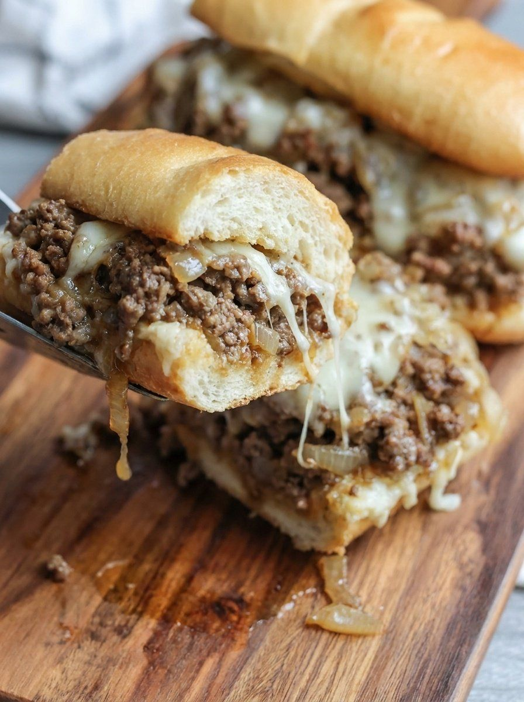

Slow Cooker Ground Beef French Dip Sandwiches

- Meal
- Dinner
- Serves
- 6 (6 sandwiches as written; the source gives no stated yield, so the count comes from its 6 buns and 6 provolone slices)
- Protein
- lean ground beef
- Cook
- skillet + slow cooker · ~15 min active / ~4 hr total (low) · easy
- Make-ahead / leftovers
- yes (slow cooker; good on a busy day) / yes
- Mediterranean
- no
- WW tier
- heavy
- Status
- Trying out (probation)
Lean ground beef browned with sliced onion, then slow-cooked with beef broth, onion soup mix and Worcestershire (oats thicken it), topped with melted provolone and spooned onto toasted brioche buns with the cooking liquid for dipping. Not Slow Cooker Dump BBQ Pulled Pork Sandwiches.
Ingredients
Original amounts from the post — already 6 sandwiches, so nothing is scaled.
- 2 pounds lean ground beef
- 1 large yellow onion, thinly sliced
- ½ cup quick-cooking oats
- 1⅓ cups beef broth
- 1 envelope (1 oz) beefy onion soup mix
- 1 tablespoon Worcestershire sauce — use a fish-free (anchovy-free) Worcestershire; see Fish-allergy note
- ½ teaspoon garlic powder
- ½ teaspoon freshly ground black pepper
- 6 slices provolone cheese
- 6 brioche burger buns or slider rolls
Method
Source method (Recipes by Clare).
- Brown the beef and onions: in a large skillet over medium, cook the beef and onion together, breaking up the beef, until no pink remains.
- Drain off the excess fat.
- To the slow cooker: spread the beef and onion in the slow cooker.
- Season: stir in the oats, broth, onion soup mix, Worcestershire, garlic powder and pepper until combined.
- Cook covered on low 3–4 hours, until the flavors meld and it thickens.
- Cheese: 15–20 minutes before serving, lay the provolone over the top and cover again to melt.
- Buns: lightly toast the buns so they don't go soggy.
- Assemble: spoon the cheesy beef onto the bun bottoms and close. Serve with small bowls of the cooking liquid for dipping.
Notes
- Servings: no yield line in the post; the 6 buns / 6 cheese slices make it 6 sandwiches, which fits the household. 2 lb beef for 6 is generous — slider rolls stretch it.
- Red meat: ground beef is the main — counts toward the ≤2 red/processed-meat cap.
- WW tier heavy: red-meat-centric sandwich on brioche with cheese and a salty soup-mix jus. Lean beef + oats help, but it's still the week's heavy.
- Mediterranean ✗: red meat, refined brioche, onion is the only vegetable (0–1 of 4). Serve with a salad or raw veg.
- Tomato / legumes / fish: none.
- a fish-free plate / hidden fish: not a fish dish, but Worcestershire normally contains anchovy. Use a fish-free Worcestershire or leave it out. Check the onion soup mix and beef broth labels for Worcestershire/anchovy too.
- Rushed night OK once it's off probation (slow cooker); while on probation, don't put it on a rushed night.
- Nutrition: not given by the source; none listed here.
Source: Recipes by Clare (@recipesbyclare), via X: https://x.com/recipesbyclare/status/2116559080999305340 (posted as "Slow Cooker Ground Beef French Dip Sandwiches")